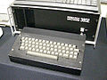

To get the ball in the pocket, you must imagine the angle it would take. By playing, you find out which number makes which angle. This should help you know your angles!
These numbers are:
0 for straight up (North),
90 for right (East),
180 for down (South) and
270 for left (West).
This way of measuring angles is called bearings and is used by orienteers, ships and planes to find their way.
This program was first written in 1979 for one of the first computers used in schools, the Research Machines 380Z.
It later became part of the SMILE suite of programs used in schools to learn about angles ('Flip'to see how the older version worked).
Play with it to learn about the numbers used for angles. This version can also be used to investigate friction and bounce as well. Read more at the National Archive of Educational Computing.